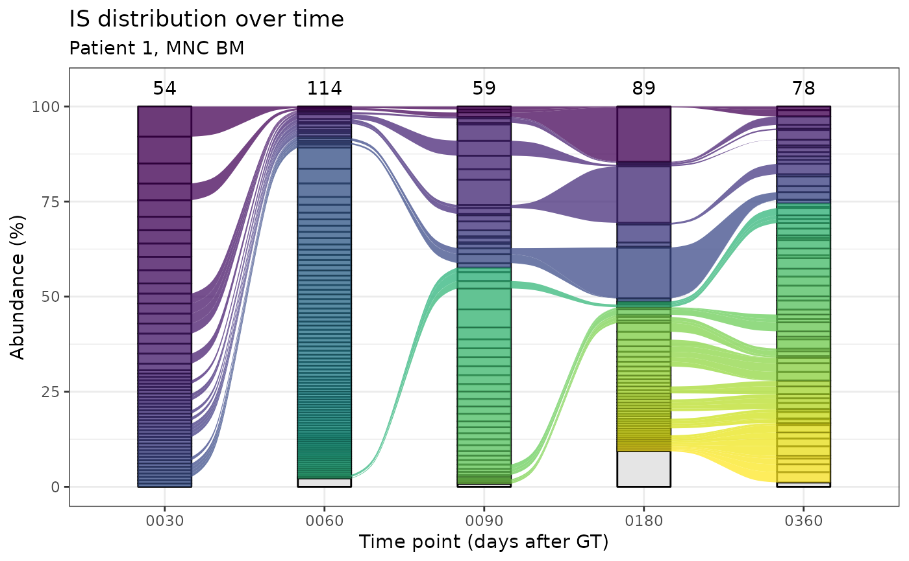

Alluvial plots for IS distribution in time.
Source:R/plotting-functions.R
integration_alluvial_plot.Rd![[Experimental]](figures/lifecycle-experimental.svg) Alluvial plots allow the visualization of integration sites distribution
in different points in time in the same group.
This functionality requires the suggested package
ggalluvial.
Alluvial plots allow the visualization of integration sites distribution
in different points in time in the same group.
This functionality requires the suggested package
ggalluvial.
integration_alluvial_plot( x, group = c("SubjectID", "CellMarker", "Tissue"), plot_x = "TimePoint", plot_y = "fragmentEstimate_sum_PercAbundance", alluvia = mandatory_IS_vars(), alluvia_plot_y_threshold = 1, top_abundant_tbl = TRUE, ... )
Arguments
| x | A data frame. See details. |
|---|---|
| group | Character vector containing the column names that identify unique groups. |
| plot_x | Column name to plot on the x axis |
| plot_y | Column name to plot on the y axis |
| alluvia | Character vector of column names that uniquely identify alluvia |
| alluvia_plot_y_threshold | Numeric value. Everything below this threshold on y will be plotted in grey and aggregated. See details. |
| top_abundant_tbl | Logical. Produce the summary top abundant tables via top_abund_tableGrob? |
| ... | Additional arguments to pass on to top_abund_tableGrob |
Value
For each group a list with the associated plot and optionally the summary tableGrob
Details
Input data frame
The input data frame must contain all the columns specified in the
arguments group, plot_x, plot_y and alluvia. The standard
input for this function is the data frame obtained via the
compute_abundance function.
Plotting threshold on y
The plotting threshold on the quantification on the y axis has the function to highlight only relevant information on the plot and reduce computation time. The default value is 1, that acts on the default column plotted on the y axis which holds a percentage value. This translates in natural language roughly as "highlight with colors only those integrations (alluvia) that at least in 1 point in time have an abundance value >= 1 %". The remaining integrations will be plotted as transparent in the strata.
See also
Other Plotting functions:
CIS_volcano_plot(),
HSC_population_plot(),
circos_genomic_density(),
sharing_heatmap(),
sharing_venn(),
top_abund_tableGrob()
Examples
data("integration_matrices", package = "ISAnalytics") data("association_file", package = "ISAnalytics") aggreg <- aggregate_values_by_key( x = integration_matrices, association_file = association_file, value_cols = c("seqCount", "fragmentEstimate") ) abund <- compute_abundance(x = aggreg) alluvial_plots <- integration_alluvial_plot(abund, alluvia_plot_y_threshold = 0.5 )#> | | | 0% | |================== | 25% | |=================================== | 50% | |==================================================== | 75% | |======================================================================| 100% #>ex_plot <- alluvial_plots[[1]]$plot + ggplot2::labs( title = "IS distribution over time", subtitle = "Patient 1, MNC BM", y = "Abundance (%)", x = "Time point (days after GT)" ) print(ex_plot)